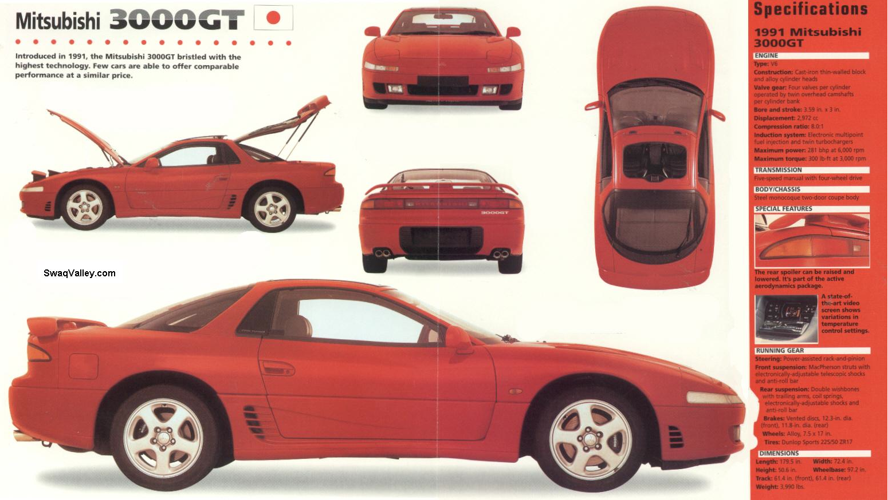

Maintenance & RestorationKeeping your Mitsubishi 3000GT in top condition requires regular maintenance and occasional restoration. Here are some tips and guides to help you maintain and restore your 3000GT. |
||
Maintenance Tips
|
 |
Restoration GuidesRestoring a 3000GT can be a rewarding project. Here are some guides to help you with the restoration process: |
DIY TutorialsFor those who prefer to do their own maintenance and restoration, we offer a variety of DIY tutorials: |
||